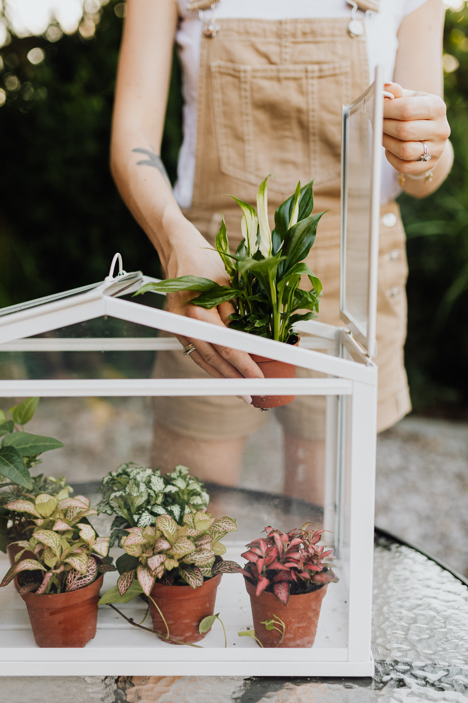
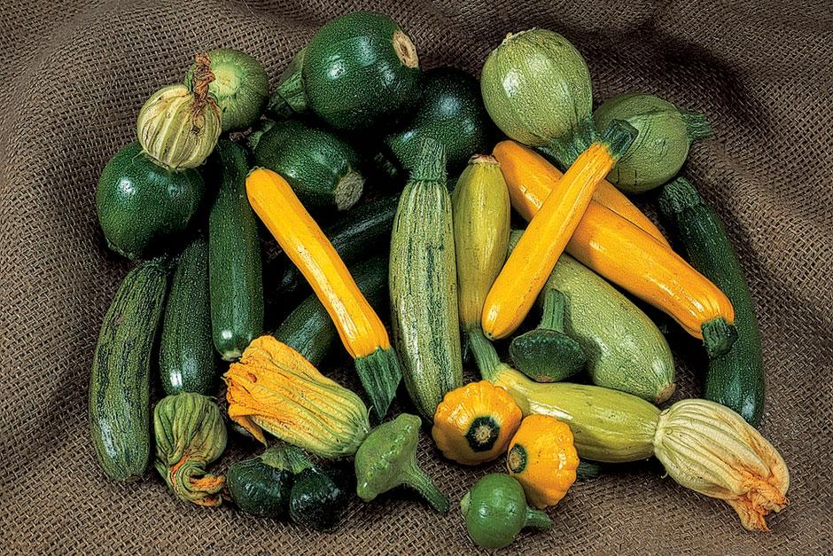

Just a little know-how will soon have you reaping gardening rewards. Start with a few simple tasks – we give you step-by-step guides and tips to help you
Learn moreNothing beats the taste of fresh fruit, vegetables and herbs grown in your own garden - or the satisfaction and enjoyment you can get from doing it. Not sure what to grow or where to start? We have all the tips and advice you need
Learn moreBe inspired to grow with a range of popular, easy to grow plants. Learn more about each genus, which ones will work for you and how to grow them in your own garden.
Learn moreA new-build garden might seem daunting, but it’s the perfect place to find your inner gardener and put your creativity into practice
Learn moreGetting your hands dirty (or even just being in a garden) can benefit the mind, body and soul; see our top tips for harnessing the power of gardening to improve your mental health and wellbeing

Professor Alistair Griffiths explains why a seismic shift in attitudes is occuring as ever-more evidence shows how important gardens and plants are for our physical, mental, and social wellbeing
From private plots to hospital gardens, churches, allotments and prisons, people all over the country are harnessing the power of gardening for good
Monday – Sunday 10am – 6pm
Last entry to garden 5pm Open daily except Christmas Day
More info